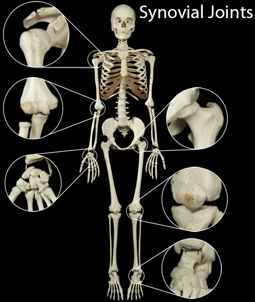

Synovial joints are the most common and the most mobile of the joint types. This mobility is largely due to the presence of a fluid known as synovial fluid which is contained within the joints.
Synovial fluid serves to reduce friction between the two bones connected by the joint. Each synovial joint connects two bones together, and the end of each bone is covered with articular cartilage. This articular cartilage is actually hyaline cartilage which also serves to decrease friction and absorb shock.
Some synovial joints also contain a structure known as an articular disk which is a fibrocartilage pad that resides between the two opposing bones. Some joints, particularly those of the wrist and knee, contain a special type of fibrocartilage pad known as a meniscus. The difference between a typical articular disk and a fibrocartilage pad is that a fibrocartilage pad has a hole in the middle.
Synovial joints are classified in three different ways based on their axial movement. Uniaxial synovial joints allow movement on one axis. Biaxial synovial joints allow movement on two axes which are located perpendicular to one another. Finally, multiaxial synovial joints allow movement around several axes.
There are 6 different types of synovial joints listed in the pull down menmu for synovial joints.
